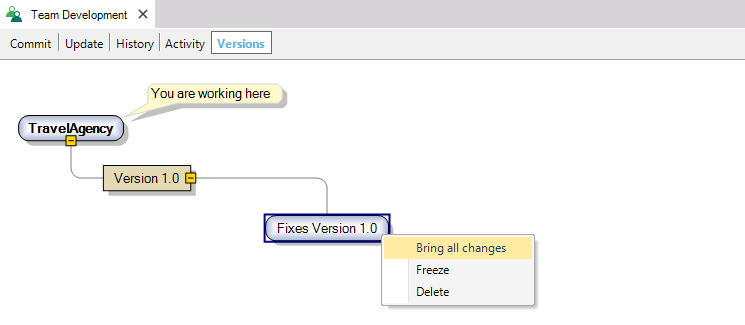

Defining versions for each application release is one of the Version Management and Work Methodology with GeneXus Server scenarios. It consists of identifying versions simply to manage the releases of the application and for managing each of them independently. This is the case where all the development work is done on one version (the Trunk) and versions are defined in each release. The development of the application starts in the Trunk, the version created with the Knowledge Base where most of the development of the application takes place (called General in the figure). To start working we can create a new Knowledge Base in GeneXus, or use one on which work has been done already. Work MethodologyThe first thing to do then is to publish that Knowledge Base in GeneXus Server using the Send Knowledge Base to GeneXus Server option. In order to work directly with that version, the other members of the development team may obtain their own working copy using the Create Knowledge Base from GeneXus Server option by getting connected to the Trunk. This allows for sending changes to GeneXus Server and for obtaining any changes made by other members of the team, through the Commit to GeneXus Server and Update From GeneXus Server operations. For this purpose we can use the Merge Mode or Lock Mode. The figure below shows the interaction of a developer with GeneXus Server. First Version ReleaseOnce the development stage is complete, version 1.0 is released. At that moment the pack is generated to be installed in the client so that testing may commence. It is then that we must freeze the development version in order to have exactly the same as what was passed on to the client, in the event that any changes need to be made. A Frozen version is a read-only version that cannot be modified. Once version 1.0 is frozen, the client starts parallel testing and the development of version 2.0 continues. Correcting ErrorsAnd what if the client reports a mistake? The correction may be done in the version that is being worked on (the future 2.0 version), but the client cannot wait for that version to be released to have the correction done. The version that the customer is testing is the one that should be corrected. To do that we must define a new development version (capable of being modified), since the Frozen version is read-only. This is done by creating a Development Version from the frozen version we had, equal to the one delivered to the client. Development Versions are subject to minor changes or corrections are made to the version that the client has. This allows for working independently on a new development version, without interfering with the rest of the development team that continues working on the development of version 2, in the Trunk.
Once the changes have been made, the modified version is forwarded to the client. Transfer of Changes to the TrunkThe changes made for the client must be passed on to the General version (Trunk) to be included in the following version to be released (version 2.0). To do that, we use Bring Changes, from a Knowledge Base connected to the General version.
We can also do Bring All Changes, that is: bring all the changes from a version different from the one being used. This is done from the dialogue of Team Development in GeneXus, Tab Versions.  Once we have the changes in the local version we must do the Commit to GeneXus Server in the General version in order to include the changes. Version ManagementWhen version 2.0 is finally released, the version tree will be as the one below. The latest versions are located on top because they are the versions that are being worked on. We could then say that a project is a tree where the Trunk is the main version for development, and the remaining versions are defined from it. In sum, what we call Knowledge Base in GeneXus is nothing but a set of versions where the main version has the same name as the Knowledge Base. Based on that version, we can create new frozen or development versions that allow us to continue developing the application in parallel and to keep all versions synchronized. Definition of VersionsAll the versions mentioned are defined in GeneXus Server and from the GeneXus Server Console, or from GeneXus itself, in the Team Development dialogue we have the option of managing the GeneXus Server versions—Team Development Versions Dialog—without the need to go to the console.
|
| Backlinks |
| Versioning the application to manage the different stages of Validation or Approval |